Open-source DJ software.
Your music. Your mix. Your people.
For the love of playing music. Mix at home, share a set with friends, or bring the neighborhood together.
Always free · macOS, Windows and Linux · v0.5.1

Built to play
Everything you need. Nothing in the way.
The things openDJ does best, and keeps getting better at.
Fast, clean, and made to play.
A calm interface that responds the moment you touch it. Sharp colour waveforms, drawn on your graphics card, show every kick, snare and vocal coming.
- Colour waveforms with intro, build, drop and outro marked
- 2-Deck, 4-Deck and Simple layouts
- Written in Rust, light on your laptop
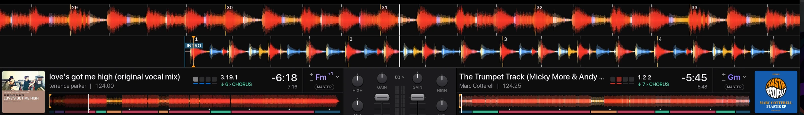
Your collection, cleaned up.
See at a glance how much of your collection is clean, from Inbox to Play Ready. Fix the sure things in one go, then review the rest one card at a time.
- Missing files, strays and duplicates found for you
- Names, tags, genres and covers filled in from online
- Every fix can be undone

All your music, one library.
Your files, your playlists on Spotify and TIDAL, and your music server, side by side in one browser. Streaming services are browse-only: see your playlists, and play the tracks you own.
- Spotify, TIDAL, Apple Music, SoundCloud and Mixcloud
- Bandcamp and Beatport for buying what's missing
- Plex and other music servers
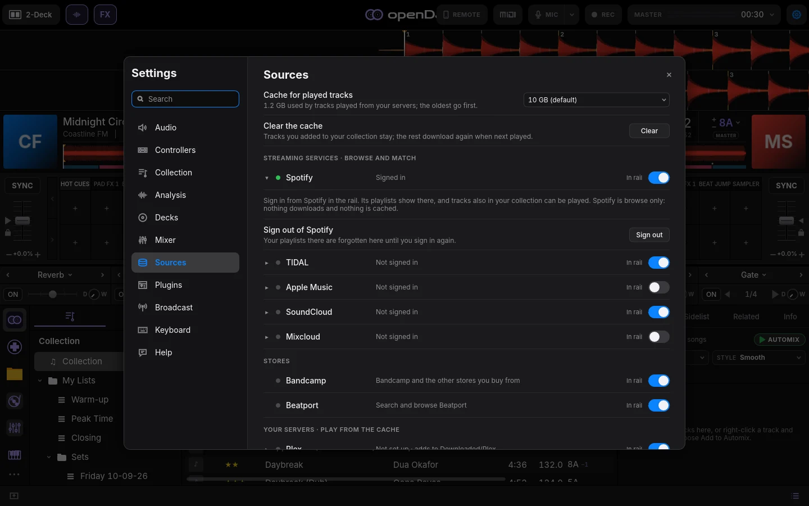
Studio-quality stems.
Every track splits into vocals, drums, bass and the rest as it loads. When it matters, prepare high-quality stems for the cleanest acapellas and instrumentals.
- Stem pads: acapella or instrumental in one tap
- Stems EQ: the mixer knobs become HiHat, Vocal, Kick and Bass
- Runs on your computer, no cloud needed
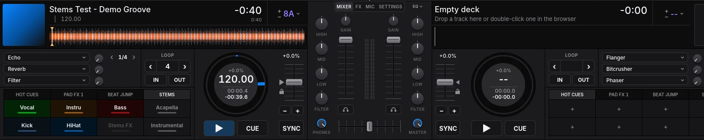
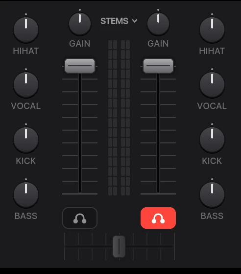
Twelve ways to play the pads.
Switch each deck's pads between twelve modes, from hot cues and loop rolls to slicing a beat or playing a melody in key.
- Hot cues, beat jump, beat loop, loop roll, sampler
- Stems, two pad FX pages, SLICER and FREEZE
- Keyboard and key shift, in key with the track
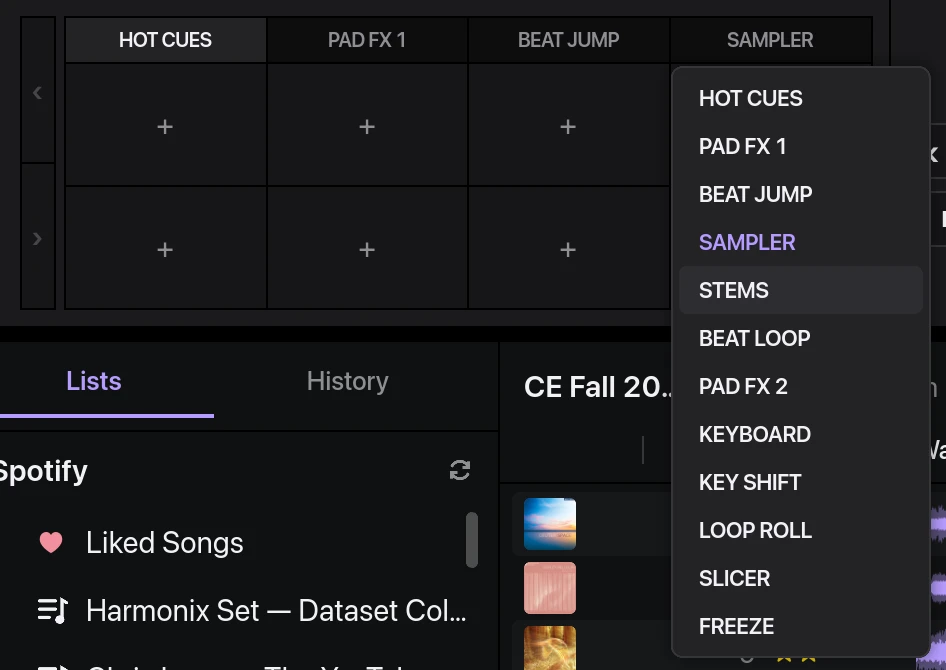
Built-in effects, and your own plugins.
Eighteen effects made for DJing, all locked to the beat: echoes that trail out, reverbs that roll, filters, sweeps and gates. Your own plugins sit in the next tab.
- Delay and echo, reverb, filter and EQ, modulation, distortion
- Beat FX plus three FX slots per deck, and Color FX on every filter knob
- VST3, CLAP and Audio Unit plugins, each in a crash-safe helper process
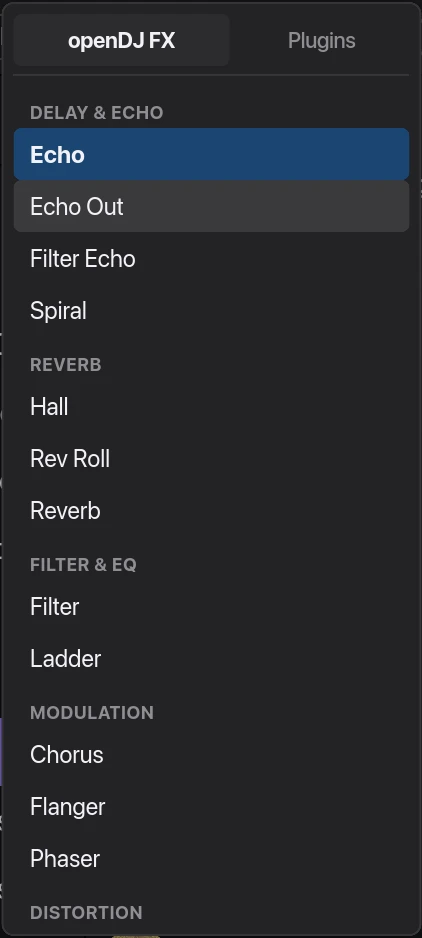
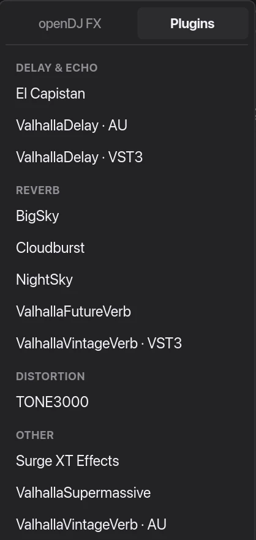
Beat grids that follow the music.
A neural beat tracker finds every beat and bar one. Steady tracks get a straight grid, and live drummers and tempo changes get a grid that bends with them.
- Dynamic grids for real tempo changes
- Lock a grid once it's right
- Bar counter, phrases and a metronome
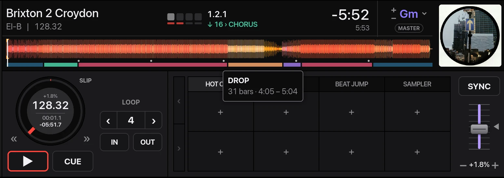
Mix in key without thinking about it.
Every track shows whether it fits the one playing. Tracks a semitone away are marked, and can shift to fit as they load.
- Harmonic or fuzzy key matching
- Key lock on by default
- A filter for tracks that mix with this one
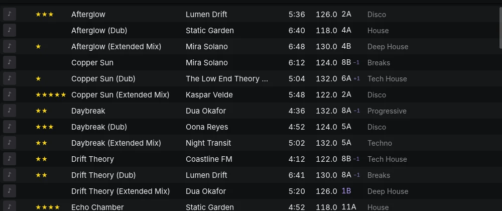
Automix, in your pocket.
Queue the tracks and openDJ beatmatches and blends them for you. Scan a QR code and run the queue from your phone, with nothing to install.
- Blends in bars or seconds, smooth or quick
- Search, add and reorder from your phone
- Sleep timer to end the night
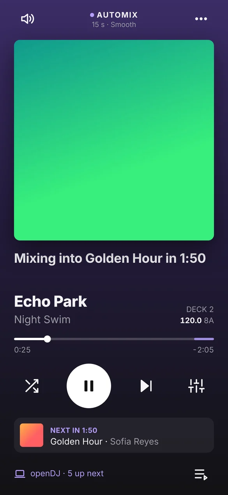
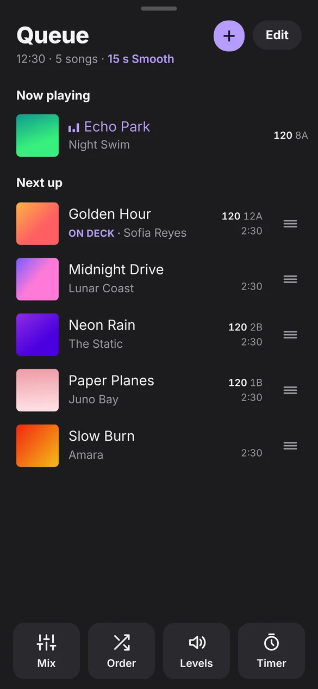
Play instruments over your mix.
Drop a synth or the Groove Box drum machine on a deck. Play it from your pads, a MIDI keyboard or the sequencer, in time and in key with the track.
- VST3, CLAP and Audio Unit instruments and effects
- Groove Box with classic drum kits
- Scale, chord and arpeggiator modes
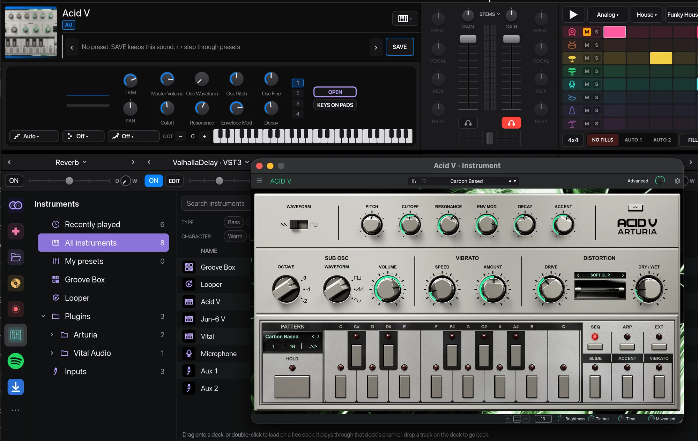
Plug in your controller.
More than 140 controllers work through Mixxx's mappings, and a growing list gets openDJ's own care. Change any control in the Controller Editor, or teach it a new one.
- Pioneer DDJ-FLX4, FLX6, XDJ-RX3, DDJ-400 and more
- Traktor Kontrol S2, S3 and S4, Numark V7, Xone:K2
- MIDI learn for anything without a mapping
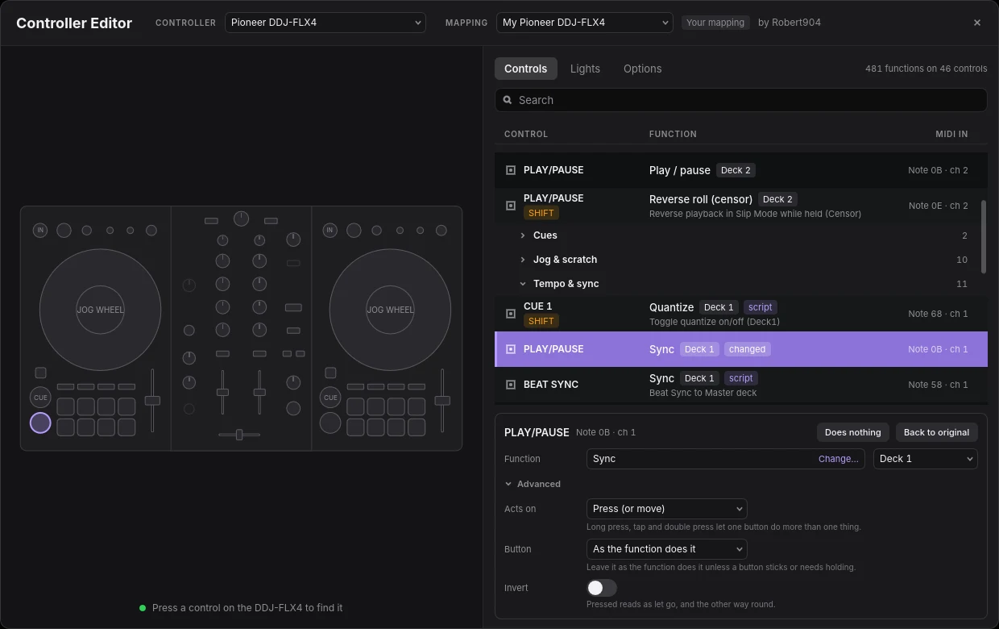
Full feature list
Everything in openDJ.
Everything openDJ does today, for the details people. A few items arrive with the next release.
Decks and performance
- 2 or 4 decks; 2-Deck, 2-Deck Pro, 4-Deck, Simple and Player layouts
- Hot cues in 8 colours, saved loops, beat jump, loop roll, slip mode
- Pad pages: hot cues, pad FX, beat jump, sampler, stems, beat loop, keyboard, key shift, SLICER, FREEZE
- Sync with quantize, master deck, tempo ranges, pitch bend and nudge
- Key lock (time-stretch), key shift and key match on load
- Beat and bar counter, phrase markers, track end warning
- Vinyl mode, fast-response scratching, Scratch crossfader curve
Mixer and effects
- Gain with auto-gain, 3-band EQ, Color FX on the filter knob
- FX bar: Beat FX plus 3 FX slots per deck, beat-locked to the grid
- 18 built-in effects: echo, reverb, gate, roll, flanger, phaser, bitcrusher and more
- CLAP, VST3 and Audio Unit effects, each in its own crash-safe helper process
- Mic and Aux inputs with their own FX, booth and headphone outputs
- Look-ahead master limiter and headphone cue mix
Stems
- Instant stems on load (vocals, drums, bass, other)
- High-quality stems with HTDemucs, prepared in the background
- Stem pads: acapella, instrumental, kick, hi-hat and more
- Stem FX: echo out or reverb a single stem
- Runs fully on your computer; reads NI STEM files
Analysis
- Neural beat detection (Beat This!) with downbeats
- Straight or dynamic grids for real tempo changes; grid lock
- Key detection with Harmonic or Fuzzy key mixing and ±1 semitone marks
- Phrase detection: intro, verse, build, drop, break, outro
- Colour GPU waveforms, mini waveforms in the browser
- Analyze Track or All, with cover art lookup
Automix and remote
- Beatmatched blends in seconds, bars or Intro over outro (phrases)
- Smooth or quick styles, and an Order menu with harmonic order
- Gapless joins for live albums and DJ mixes
- Phone remote over Wi-Fi: QR or PIN pairing, queue, search, sleep timer
- Now-playing feed and OBS overlay
Collection
- Your music folders, with stages: Inbox, In Prep, Play Ready
- Crates, playlists, smart lists, sets, history by day
- Tag groups, batch editing, ratings, colours, forgiving search syntax
- Albums and Recordings views
- Backups to one .opendjbackup file, daily by default
Collection Health
- Dashboard with how ready your collection is, in five areas
- Missing files relinked, duplicates merged, strays and non-music found
- Names, tags, genres and covers fixed from MusicBrainz and Discogs
- Auto-fix the sure ones, review the rest one card at a time
- Quarantine instead of delete; every fix can be undone
Imports and exports
- Import rekordbox (6/7 database or XML), VirtualDJ, Traktor and Mixxx
- Keeps hot cues, loops, grids, keys, playlists and history
- M3U8, PLS and XSPF playlists in; M3U8 out
- rekordbox XML export with grids, cues and colours
- Experimental Pioneer USB export
Sources
- Browse Spotify, TIDAL, Apple Music, SoundCloud and Mixcloud (read only)
- Tracks you own as files play from your collection
- Play from your Plex, Navidrome or Jellyfin server
- Buy Wanted tracks from Bandcamp, Beatport, Qobuz and more
- Export your history to a Spotify playlist
Instruments
- CLAP, VST3 and Audio Unit instruments on a deck
- Groove Box: 8-track drum machine with classic analog kits
- Play from the pads, a MIDI keyboard or the sequencer
- Scale, chord and arpeggiator modes, in key with the track
- Plugin presets, input trim and a safety limiter
Controllers
- 140+ MIDI controllers via Mixxx mappings, unchanged
- openDJ's own mappings for DDJ-FLX6, XDJ-RX3, Xone:K2 and Maschine Mikro MK3
- USB HID: Traktor Kontrol S2, S3, S4, F1, Z1, MX2
- Controller Editor, MIDI map (learn), Quick map and a mapping wizard
- Import mappings from VirtualDJ, Traktor, rekordbox and djay
Recording and sync
- Record to WAV or FLAC with a .cue tracklist
- Stream to Icecast or Shoutcast with a LUFS loudness meter
- Mixcloud export with the tracklist
- Ableton Link, MIDI clock in and out, OSC with feedback
- Per-deck outputs for a DAW or an external mixer
Under the hood
- Written in Rust; Slint interface, wgpu waveforms
- macOS (Apple Silicon and Intel), Windows, Linux
- CoreAudio, WASAPI, ASIO, ALSA; buffer and sample rate settings
- Audio health meter for dropouts
- Signed, notarized macOS app that updates itself
- Free software under the GPL 2.0 or later
Free means free
Less fine print. More music.
No subscription
Every feature, free, for good.
No hidden AI plan
Stems and beat detection run on your computer. No tokens, no credits.
No ads
Nothing to sell you inside the app.
No lock-in
Open source under the GPL, and your music stays your files.
Become an openDJ Steward
Play it on your gear. Tell us how it went.
Test your controller, report bugs and vote on features. Stewards are thanked by name in the release notes, and their controllers get fixed first.
Frequently asked questions.
Is openDJ really free?
Yes. openDJ is open source under the GPL, with no subscription, no paid tier and no account. If it plays a part in your sets, you can buy us a coffee.
Will my controller work?
Most likely. openDJ runs Mixxx's mappings for more than 140 MIDI and HID controllers, and the most popular ones get their own mapping and a drawing in the Controller Editor. If yours misbehaves, tell us which one.
Can I bring my rekordbox, VirtualDJ or Mixxx library?
Yes. openDJ reads the other app's library where it lives, with hot cues, loops, grids, playlists and history. Your other app's library is never changed, so you can keep using both. How importing works →
Is it ready to play a gig?
openDJ is in public beta. Plenty of sets are played on it, but play yours at home first on your own laptop, audio interface and controller, and tell us what you find.
Prep the music. Play the set.
Free, for macOS, Linux and Windows. Version 0.5.1.
macOS
Apple Silicon and Intel, macOS 11 or newer. Signed and notarized, updates itself.
Windows Preview
64-bit Windows 10 or 11, with Windows Audio and ASIO. Not signed yet: More info → Run anyway.
openDJ is free and always will be. If it plays a part in your sets, a coffee helps keep it going.
☕ Buy me a coffee